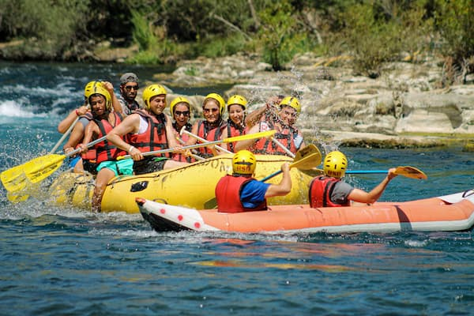
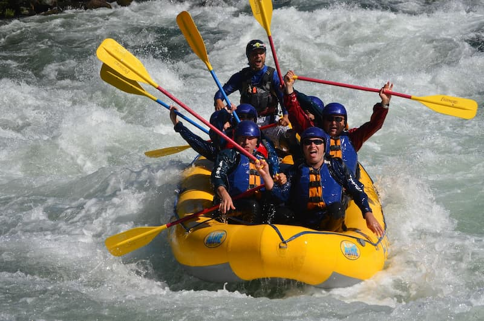
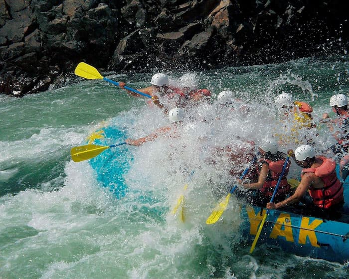
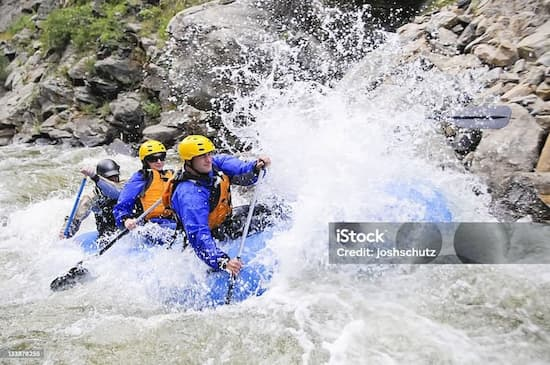
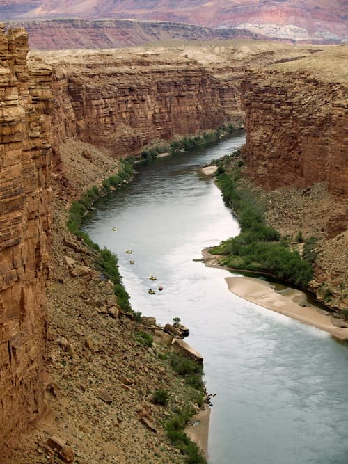
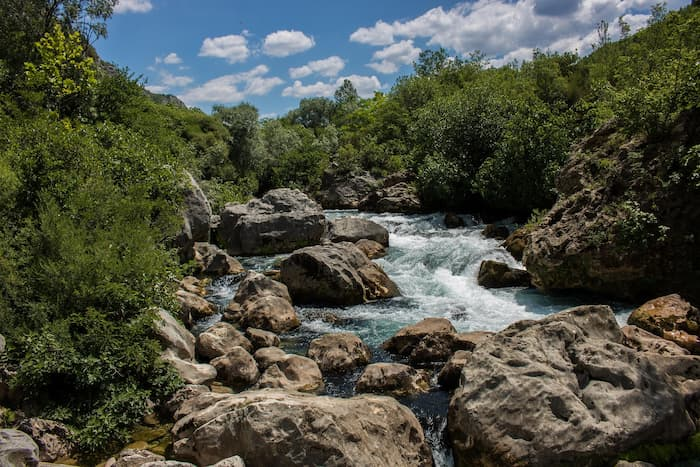

Fazer do seu passeio uma das melhores experiências da sua vida


Fazer do seu passeio uma das melhores experiências da sua vida
Nascemos do amor pela aventura e pelo desejo de proporcionar a você as melhores aventuras da vida, temos prazer em lhe ajudar a se conectar com a natureza com total segurança e despertar o seu desejo de aventura.

Dispomos de trilhas mais tranquilas ou mais radicais, de acordo com o seu gosto, temos pacotes para toda a familia, adultos e crianças e pacotes somente para adultos.




